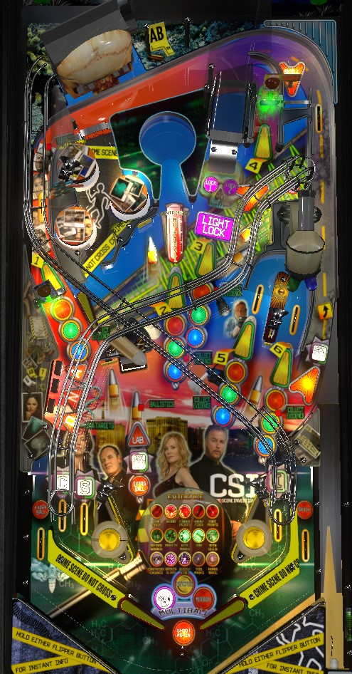

Multiballs are started by repeatedly shooting the Centrifuge in the middle of the game, the Skull center ramp, or by making the Microscope u-turn on the right and shooting anything lit with the announced colour. Stacking Centrifuge Multiball with one of the other two is the fastest way to big points. Bonus and bonus multiplier can become very important late in the game, so be sure you're lighting all of the in lanes when you can, and if you're a skilled plunger and shatz/alley passer, use short plunges to earn in lane credit and drain without triggering CSI's 3-switch playfield validation rule.
The skill shot is a precise-power plunge that goes all the way up the shooter lane and falls down a lane in the very top right, causing the ball to land directly in the Morgue popper. This skill shot scores 500,000 points the first time it is made and increases by 100,000 each subsequent time. The skill shot is available at the start of each ball. The skill shot can also be made immediately after a lock toward Skull Multiball, but you must be quick with your manual plunge or the game will autoplunge the ball for you. A plunge that is too short comes down the right orbit and falls to the right flipper. A plunge that is too strong goes around the top of the game and into the pop bumpers. If the ball goes through the bumper area without triggering any pop bumpers, the upper left flipper can be used to shoot the Morgue popper directly; this will still count as the skill shot since no other playfield switches had yet been scored. If one or more bumpers was triggered on the way down, shooting the Morgue popper directly will instead score a Photo Award equal to the sum of all pop bumper values scored on that trip through the pops.
In a competitive setting, many players up to ignore the skill shot, and choose to short plunge instead. CSI: requires 3 different switches on the playfield before the ball is considered to be in play. It is possible to short plunge, get the ball on the right flipper without hitting any switches, shatz/alley pass the left in lane to light it and earn progress toward spelling CSI, then intentionally drain. Spelling CSI advances the bonus multiplier, which can be very valuable, especially on ball 3. The intentional drain is risk-free- since the game does not consider the ball to have ever entered live play, a new ball is kicked out- and the intentional drain also resets the 3-switch counter, allowing this process to be repeated. In theory, this playfield validation method can be exploited until the bonus multiplier is maxed out at 25x; doing so on ball 3 would guarantee an end-of-ball bonus of at least 9,375,000 at the end of the game, which is an enormous amount.
CSI: has 3 multiballs, and playing multiball as frequently as possible is a main goal of the game. Each multiball has a completion criteria; meeting that criteria lights the insert corresponding to that multiball near the flippers.
Skull Multiball
To qualify: shoot the center ramp repeatedly to lock 2 balls. For the first Skull Multiball, it takes 1 center ramp shot to lock ball 1, and 2 center ramp shots to lock ball 2. Subsequent Skull Multiballs each require one additional center ramp shot per lock. When 2 balls are locked, multiball begins. Skull Multiball starts as a 2-ball multiball.
To complete: Skull Multiball has 4 phases.
Centrifuge Multiball
To qualify: each shot to the Centrifuge, the keyhole-shaped structure with the spinning disc in the middle of the game, will cause the ball to spin in the Centrifuge for a few moments. The game counts the number of times the ball spins in the Centrifuge. After reaching the required number of spins, lock is lit. The required number of spins is 70 for the first Centrifuge Multiball, and increases by 50 each time; one shot to the Centrifuge is usually good for 15-25 spins if the spinning disc has sufficient friction. When lock is lit, shoot the Centrifuge once more to lock the ball, starting Raise Jackpot.
Raise Jackpot: when a ball is locked for Centrifuge Multiball, the jackpot is started at 100,000 points (increases by 25,000 each subsequent multiball) and Raise Jackpot is started with a 20-second clock (increases by 4 seconds with each subsequent multiball). During Raise Jackpot, any switch in the game increases the jackpot; making major shots increases the jackpot significantly, with the left orbit and Morgue popper adding 50,000 and the DNA scoop adding 25,000. Shooting the post in front of the Centrifuge during Raise Jackpot adds 100,000 points to the jackpot and releases the locked ball, starting Centrifuge Multiball. If time expires before the Centrifuge is shot again, the ball is released and multiball begins but without the 100,000 boost to the jackpot value. If you drain the lone ball in play during Raise Jackpot, then the locked ball is released, but the entire Centrifuge Multiball chance will be wasted and you must requalify the ball lock from scratch.
During multiball: Centrifuge Multiball presents up to 6 jackpots, in three pairs. At first, the Centrifuge and the center ramp are lit. Shoot either one to score a "first jackpot" at 1x jackpot value, and then you will have about 3 seconds to shoot the other one for a "second jackpot" at 2x jackpot value. Whether you succeed or fail at the second jackpot, you move to the second round. In round 2, the left orbit and right spinner are lit. Shoot either one for a 1x "first jackpot", then shoot the other one for a "second jackpot", whose multiplier will be 3x if you collected the 2x "second jackpot", or 2x if you did not. The last pair is the two entrances to the Microscope u-turn: shoot either for a 1x "first jackpot", then shoot the other for a "second jackpot" with a multiplier of 2x, 3x, or 4x depending on whether you earned 0, 1, or 2 of the previous 2 "second jackpots". After the three pairs, shoot the Centrifuge for Super Spins: the Centrifuge will spin for at least 10 seconds, with each lap that the ball makes in the centrifuge scoring 15,000 points times the multiplier of the highest jackpot you earned during the "three pairs" phase (1, 2, 3, or 4). Earning Super Spins gives credit for completing Centrifuge Multiball and sends you back to the first of the three pairs. If you reach Super Spins multiple times during a single Centrifuge Multiball, the base per-spin value of Super Spins will increase by 1,250 points each time.
Microscope Multiball
To qualify: first, shoot the Microscope u-turn in either direction to lock in one colour (red, green, or blue), then collect 5 pieces of that evidence's colour to light multiball. Evidence can be collected at any shot with a "stoplight" in front of it: the left orbit, Centrifuge, center ramp, and either direction of the Microscope u-turn. Making a shot will rotate which colour of Evidence is lit for that shot. For the first multiball, all shots start lit with the colour you need, and the u-turn will never rotate which colour is lit. For subsequent Microscope Multiballs, each shot starts at a random colour, and the u-turn shot's colours rotate when hit as well. Whether it's evidence of the colour you need or not, the first piece of evidence collected for a colour scores 60,000, then 70,000, etc., up to 100,000 for the fifth. After collecting all 5 pieces of Evidence for the colour that was locked in, shoot the Microscope u-turn again to start 2-ball Microscope Multiball.
To complete: Microscope Multiball has 6 phases.
Completing all 3 multiballs qualifies the Multiball Wizard award at the DNA scoop, which scores 50,000,000 points and unlights all three multiball completions so that you can attempt to earn them again. Centrifuge Multiball can be stacked with either Skull Multiball or Microscope Multiball, but not both, because Skull Multiball disables the ability to collect Evidence toward Microscope Multiball.
Centrifuge Multiball can be stacked with either Skull or Microscope Multiball, but Skull and Microscope Multiballs cannot run simultaneously; Skull Multiball disables collecting evidence toward Microscope Multiball, and balls cannot be locked for Skull Multiball during Microscope Multiball. Scores can grow very quickly if Skull Multiball is started first, then Centrifuge Multiball is qualified so that Raise Jackpot takes place with 2 or 3 balls in play. All multiballs start with 2 balls; if two multiballs are stacked, there will be 3 balls in play; once per multiball, the DNA mystery award will be Add-a-Ball, which adds a ball to the playfield and makes a multiball stack with 4 balls in play possible.
Suspect Shakedown
To start Suspect Shakedown, record a total of 50 hits on the left spinner to complete the Suspect scan. Suspect Shakedown is a 25-second timed mode that starts with all yellow shots lit. One shot is chosen at random and secretly as the Suspect's hideout. Making this shot scores 1,000,000 points and ends the mode. Making incorrect shots scores 300,000 points (increasing by 100,000 with each subsequent incorrect shot) and unlights that shot.
Fingerprint Frenzy
To start Fingerprint Frenzy, record about 30 hits on the right spinner to decode the Fingerprints. Fingerprint Frenzy is a 25-second timed mode where any switch in the game scores 10,000 points in addition to its regular value. Fingerprint Frenzy is very generous about stopping the mode timer if a ball is in the pop bumper area, Morgue popper, or DNA scoop, even if there are other balls in play.
Ballistics
To start Ballistics, shoot all 5 Bullet standup targets during single ball play, then shoot the DNA scoop to start the mode. Ballistics is a 40-second mode where your goal is to recollect the Bullets by hitting all 5 Bullet targets and the DNA scoop again. Bullets collected during this mode score 500,000 points, increasing by 50,000 with each subsequent Bullet.
If one of these timed minor modes is running, the DNA mystery award will usually award More Time, which adds 20 seconds to the timer. More Time can apply to a mode more than once; I've seen a Fingerprint Frenzy with 61 seconds remaining before.
Shots to the Morgue popper in the top right advance toward score awards. Awards include:
After this, every 5th shot gives an award worth 25,000 more points than the previous award.
Completing the DNA drop targets on the left lights the near-left scoop for a DNA mystery award. This mystery award will usually try to be something helpful to your current situation. Possible awards include:
This list may not be exhaustive.
The pop bumper value starts each ball at 3,000 points. Right orbit shots and DNA mystery awards can increase the pop bumper value 1,000 at a time up to a maximum of 10,000 points per bumper. When the ball leaves the pop bumper area, using the upper flipper to immediately shoot the ball into the Morgue popper scores the Photo Award, which is equal to the sum total of the value of all pop bumpers hit on the most recent trip through the bumper nest.
Bonus multiplier can be advanced in one of four ways:
Bonus is calculated as:
Bonus can be very significant on CSI, especially if you build up a high bonus multiplier late in a game.
The left out lane can be lit for Extra Ball from a DNA mystery award, and the right out lane can be lit for Special by a Morgue popper award. There is a center post between/below the flippers.
| If you need... | Try... |
| 500,000 points | ...making a skill shot or focusing on collecting Evidence, even if you don't get all the way to qualifying Microscope Multiball. |
| 2,000,000 points | ...collecting a couple bonus multipliers, DNA mystery awards, or starting Suspect Shakedown or Fingerprint Frenzy. |
| 5,000,000 points | ...dialing in the center ramp and getting a Skull Multiball running as quickly as possible. The ramp is far away, but quite large, and fairly easy to hit in most cases. |
| 10,000,000 points | ...playing a strong Centrifuge Multiball that earns multiplied Super Spins, or a strong Microscope Multiball that scores the Mega Jackpot or at least earns quite a few of the Evidence "victory laps" in phase 5. |
| 20,000,000 points | ...stacking Centrifuge and Microscope Multiballs, playing them together for a long time to earn super jackpots for both. Starting Fingerprint Frenzy before the multiballs is a great idea as well. |
| 50,000,000 points or more | ...starting as many multiballs as you can with the goal of gunning for the Multiball Wizard mega award. |